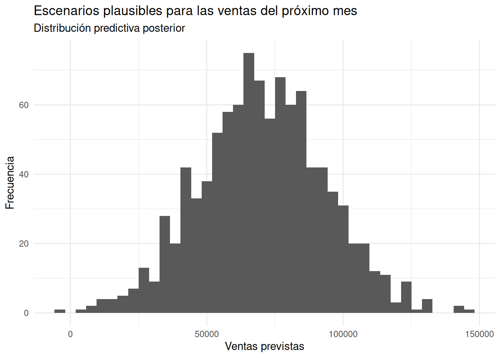
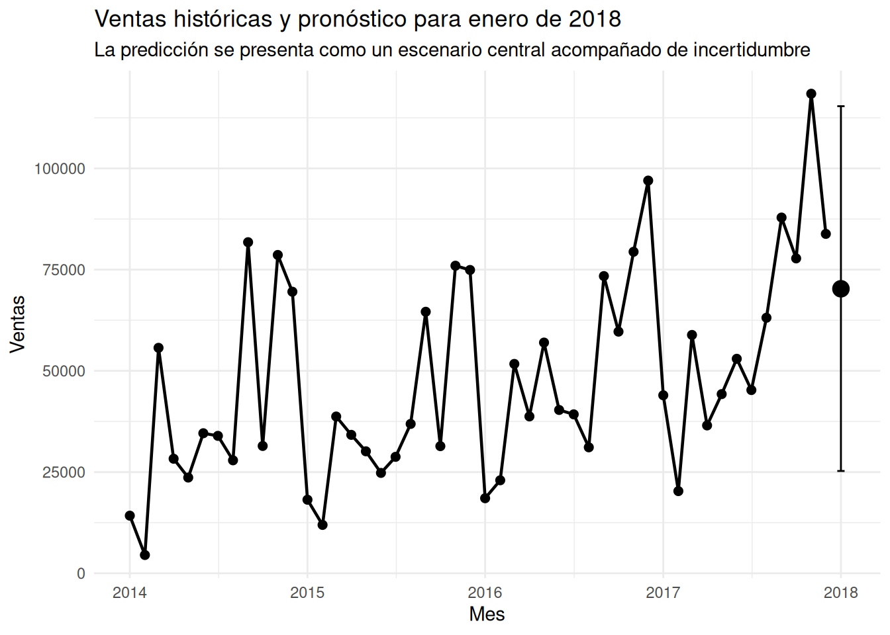

class(superstore$`Order ID`)[1] "character"Cuando una empresa planifica el próximo mes necesita tomar decisiones antes de conocer lo que realmente ocurrirá.
¿Cuánto inventario debemos preparar? ¿Cuántas personas necesitaremos? ¿Cuánto dinero podríamos necesitar para operar? ¿Qué nivel de ventas sería razonable utilizar como referencia?
Una respuesta tradicional podría consistir en calcular un único valor y utilizarlo como pronóstico.
Pero el futuro no funciona de esa manera.
Aunque podamos encontrar patrones en los datos históricos, siempre existe incertidumbre. Por eso, en lugar de preguntar únicamente:
¿Cuánto venderemos el próximo mes?
podemos plantear una pregunta más útil:
¿Qué valores de ventas son plausibles para el próximo mes y qué tan incierto es ese escenario?
Esta diferencia es fundamental para el análisis de negocios.
En esta entrada utilizaremos los datos de Superstore Sales para construir un modelo bayesiano sencillo que relacione las ventas mensuales con el paso del tiempo y nos permita generar una distribución de posibles ventas para el mes siguiente.
El objetivo no será adivinar el futuro.
Será cuantificar nuestra incertidumbre sobre él.
Nuestro conjunto de datos contiene 9.994 registros de ventas y diferentes variables relacionadas con pedidos, clientes, productos y resultados comerciales.
Para este análisis nos interesan principalmente dos variables:
Order Date: fecha de la venta.Sales: valor de la venta.Antes de construir cualquier modelo temporal necesitamos comprobar cómo están almacenadas realmente las fechas. Y vemos que están almacenadas como cadenas de caracteres:
class(superstore$`Order ID`)[1] "character"Esto es importante porque una fecha almacenada como texto no puede utilizarse directamente como una variable temporal. Entonces transformamos el texto a formato de fecha
superstore <- superstore |>
mutate(
Order_Date = mdy(`Order Date`)
)Y comprobamos resumiendo la variable de fecha de pedido:
summary(superstore$Order_Date) Min. 1st Qu. Median Mean 3rd Qu. Max.
"2014-01-03" "2015-05-23" "2016-06-26" "2016-04-30" "2017-05-14" "2017-12-30" Y también deberíamos asegurarnos de no tener valores faltantes:
sum(is.na(superstore$Order_Date))[1] 0La variable Order Date estaba almacenada como texto, pero sus valores tenían el formato mes/día/año. Por ello utilizamos mdy() para convertirla correctamente a una fecha.
El resultado confirma que la transformación funcionó.
La primera fecha observada es el 3 de enero de 2014 y la última es el 30 de diciembre de 2017. Además, no se encontraron valores faltantes después de la transformación.
Tenemos, por tanto, un período de aproximadamente cuatro años sobre el cual podemos observar la evolución de las ventas.
El dataset original contiene cada operación individual. Para estudiar la evolución temporal de las ventas necesitamos cambiar el nivel de análisis.
En lugar de analizar cada pedido, vamos a sumar todas las ventas correspondientes a cada mes.
# A tibble: 48 × 2
Mes Sales
<date> <dbl>
1 2014-01-01 14237.
2 2014-02-01 4520.
3 2014-03-01 55691.
4 2014-04-01 28295.
5 2014-05-01 23648.
6 2014-06-01 34595.
7 2014-07-01 33946.
8 2014-08-01 27909.
9 2014-09-01 81777.
10 2014-10-01 31453.
# ℹ 38 more rowsEl resultado contiene 48 observaciones mensuales, desde enero de 2014 hasta diciembre de 2017.
Por ejemplo, las ventas fueron de aproximadamente 14.237 dólares en enero de 2014 y alcanzaron aproximadamente 118.448 dólares en noviembre de 2017.
Esta transformación es importante porque ahora tenemos una verdadera serie temporal mensual.

El gráfico muestra dos características importantes.
La primera es una tendencia general positiva. Los valores máximos aumentan a lo largo de los años: aproximadamente 81.000 dólares en 2014, 76.000 en 2015, 97.000 en 2016 y 118.000 en 2017.
El hecho de que 2015 presente un máximo algo inferior al de 2014 no contradice necesariamente una tendencia creciente. Lo importante es observar el comportamiento general de la serie y no un único año aislado.
La segunda característica es una variabilidad mensual considerable.
Las ventas suelen alcanzar valores elevados hacia el final del año, especialmente en noviembre y diciembre, mientras que enero y febrero presentan frecuentemente niveles mucho menores.
Por ejemplo, en 2017 las ventas alcanzaron aproximadamente 118.448 dólares en noviembre, pero fueron de apenas 20.301 dólares en febrero.
Esto nos deja una primera conclusión:
El negocio parece crecer a lo largo del tiempo, pero ese crecimiento convive con una importante variación entre meses.
Esta observación será fundamental para nuestro pronóstico.
Para transformar el tiempo en una variable que pueda utilizar nuestro modelo vamos a asignar un número consecutivo a cada mes.
Así:
El modelo que construiremos es deliberadamente sencillo:
modelo_ventas <- stan_glm(
Sales ~ Tiempo,
data = ventas_mensuales,
family = gaussian(),
chains = 2,
iter = 1000,
seed = 1234,
refresh = 0
)La idea es muy intuitiva.
Le estamos preguntando al modelo:
Si las ventas han seguido determinada trayectoria histórica, ¿qué valores de ventas son compatibles con esa trayectoria y con la variabilidad observada?
El modelo estima dos componentes principales:
Los resultados fueron:
| Parámetro | Mediana | MAD_SD |
|---|---|---|
| Intercepto | 25.527,6 | 6.628,1 |
| Tiempo | 905,7 | 227,1 |
| Sigma | 22.123,6 | 2.117,2 |
El intercepto tiene una mediana posterior de aproximadamente 25.528 dólares.
Pero debemos tener cuidado con su interpretación.
Nuestro primer mes observado es el mes 1, no el mes 0. Por tanto, no debemos decir que antes de que comenzara el negocio las ventas fueron realmente de 25.528 dólares.
El intercepto representa el valor que el modelo estima matemáticamente cuando Tiempo = 0.
Es, por tanto, un punto de referencia del modelo, no una observación histórica.
El parámetro más interesante para nuestra pregunta es Tiempo.
Su media posterior es de aproximadamente 902 dólares, con un intervalo central del 80% entre 586 y 1.212 dólares.
En términos empresariales podemos interpretarlo de la siguiente manera:
Según el modelo, cada mes adicional está asociado, en promedio, con alrededor de 900 dólares adicionales de ventas.
Existe incertidumbre alrededor de esta estimación. El modelo no afirma que exactamente 900 dólares vayan a agregarse cada mes.
De hecho, el 80% de los valores posteriores considerados se encuentra aproximadamente entre 586 y 1.212 dólares.
Esta es una de las ventajas de pensar de manera bayesiana: no tenemos solamente un número, sino una distribución de valores plausibles para ese número.
El parámetro sigma tiene una mediana posterior de aproximadamente 22.124 dólares.
En términos sencillos, representa la variabilidad de las ventas mensuales que el modelo no consigue explicar únicamente mediante el paso del tiempo.
El 80% de los valores posteriores para sigma está aproximadamente entre 19.471 y 25.656 dólares.
Esto es importante.
Aunque exista una tendencia creciente, el tiempo por sí solo está lejos de explicar perfectamente las ventas.
Hay otros factores que afectan las ventas mensuales: estacionalidad, promociones, composición de productos, clientes, campañas comerciales y muchos otros elementos que nuestro modelo sencillo no incluye.
Por eso, una buena predicción debe conservar esa incertidumbre.
Tenemos 48 meses en nuestros datos.
El siguiente período será, por tanto, el mes 49, correspondiente a enero de 2018.
max(ventas_mensuales$Tiempo)El resultado es 48.
Creamos entonces una observación para el siguiente período:
proximo_mes <- tibble(
Tiempo = max(ventas_mensuales$Tiempo) + 1
)
proximo_mes# A tibble: 1 × 1
Tiempo
<dbl>
1 49El modelo puede utilizar esta nueva observación para generar no una única predicción, sino muchos escenarios posibles.
predicciones <- posterior_predict(
modelo_ventas,
newdata = proximo_mes
)Los resultados obtenidos fueron:
| Medida | Ventas |
|---|---|
| Mínimo | -3.543 |
| Primer cuartil | 54.982 |
| Mediana | 69.970 |
| Media | 70.380 |
| Tercer cuartil | 84.743 |
| Máximo | 144.821 |
La primera lectura podría ser:
El escenario central para enero de 2018 se encuentra alrededor de 70.000 dólares de ventas.
Pero hay algo todavía más interesante.
El modelo no está diciendo simplemente “las ventas serán 70.000 dólares”.
Está generando una distribución de escenarios.
Podemos visualizar esas predicciones:

La distribución se concentra alrededor de los 70.000 dólares, aunque existe una dispersión considerable.
La mediana es aproximadamente 69.970 dólares y la media 70.380 dólares. Que ambas cifras sean bastante similares indica que el centro de la distribución se encuentra aproximadamente en esa zona.
También observamos una cola hacia valores considerablemente mayores.
Pero aparece algo extraño: algunos valores de la simulación son negativos.
No.
Y precisamente aquí aparece una lección metodológica muy importante.
Utilizamos una distribución gaussiana para modelar las ventas. La distribución normal tiene una característica matemática: puede generar valores por debajo de cero.
El modelo no sabe que las ventas reales no pueden ser negativas.
Por eso aparecen algunos valores como -3.543 dólares.
Esto no significa que estemos pronosticando realmente ventas negativas.
Significa que nuestro modelo es una aproximación sencilla y que la distribución elegida no incorpora explícitamente la restricción de que las ventas deben ser positivas.
Este detalle no invalida automáticamente el análisis, especialmente porque los valores negativos son muy pocos y están muy alejados del centro de la distribución. Pero sí nos recuerda algo fundamental:
Un modelo puede producir resultados matemáticamente válidos que no sean completamente adecuados para el problema de negocio.
En un análisis más avanzado podríamos utilizar una especificación que respete mejor la naturaleza positiva de las ventas.
Para esta entrada, sin embargo, nos interesa especialmente aprender la lógica del pronóstico bayesiano: el futuro se representa mediante una distribución de escenarios y no mediante una única cifra.
Podemos resumir la distribución utilizando tres cuantiles:
intervalo_predictivo <- quantile(
predicciones,
probs = c(0.025, 0.5, 0.975)
)Obtuvimos:
| Percentil | Ventas |
|---|---|
| 2,5% | 24.265,87 |
| 50% | 69.969,77 |
| 97,5% | 117.236,26 |
Por tanto, el intervalo predictivo central del 95% se encuentra aproximadamente entre:
24.266 y 117.236 dólares.
La mediana es de aproximadamente 69.970 dólares.
Esto nos proporciona una información mucho más útil que decir simplemente “esperamos vender 70.000 dólares”.
Podemos plantearlo así:
El escenario central para enero de 2018 se sitúa alrededor de 70.000 dólares, pero los escenarios compatibles con el modelo abarcan aproximadamente desde 24.000 hasta 117.000 dólares.
Esto no significa que exista una probabilidad de exactamente 95% de que el futuro caiga dentro de ese intervalo bajo cualquier interpretación posible. Se trata de un intervalo predictivo generado por el modelo, condicionado a los datos, supuestos y estructura que hemos utilizado.
La diferencia es importante: el intervalo refleja tanto la incertidumbre sobre los parámetros como la variabilidad de una futura observación.
Finalmente podemos colocar el escenario central y su intervalo junto a las ventas históricas.

El gráfico resume visualmente todo nuestro análisis.
La serie histórica muestra una tendencia general creciente, pero también una importante variabilidad mensual y un comportamiento estacional aparente, con ventas generalmente mayores hacia el final de los años.
El punto del extremo derecho representa la mediana predictiva, cercana a 70.000 dólares.
La barra vertical representa el intervalo predictivo del 95%, aproximadamente entre 24.000 y 117.000 dólares.
Por tanto, la información que recibe quien debe tomar una decisión es mucho más rica que una única cifra.
Supongamos que debemos planificar enero de 2018.
Una respuesta poco cuidadosa sería:
“Las ventas serán de aproximadamente 70.000 dólares.”
Una respuesta más útil sería:
“El escenario central se encuentra alrededor de 70.000 dólares, pero existe una incertidumbre considerable. Bajo nuestro modelo, un intervalo predictivo del 95% se extiende aproximadamente desde 24.000 hasta 117.000 dólares.”
La segunda respuesta permite pensar en escenarios.
Por ejemplo:
La empresa puede entonces preguntarse qué decisiones son robustas frente a esos escenarios.
Si estamos planificando inventario, podríamos evitar comprar exactamente la cantidad correspondiente al escenario central si el costo de quedarse sin inventario es muy alto.
Si estamos planificando personal, podríamos evaluar qué capacidad necesitamos si las ventas se acercan al escenario superior.
Si estamos planificando liquidez, podríamos estudiar qué ocurre si las ventas se encuentran considerablemente por debajo del escenario central.
El pronóstico bayesiano no toma la decisión por nosotros.
Nos ayuda a tomar decisiones conscientes de la incertidumbre.
Este ejercicio muestra una diferencia fundamental entre predecir y pronosticar.
Un pronóstico ingenuo intenta producir una cifra:
“Las ventas serán X.”
Un enfoque probabilístico pregunta:
“¿Qué valores de ventas son plausibles y cuánta incertidumbre existe alrededor de ellos?”
Nuestro modelo estima que existe una trayectoria creciente de las ventas. Pero también reconoce que la variabilidad mensual es considerable.
Por eso el resultado final no es una cifra aislada.
Es una distribución.
Y esa distribución contiene información empresarial.
La mediana nos proporciona un escenario central.
Los cuantiles nos permiten comprender la amplitud de escenarios plausibles.
La dispersión nos recuerda que una tendencia histórica no elimina la incertidumbre.
Incluso la aparición de valores negativos en la simulación nos proporciona una enseñanza: los modelos deben evaluarse también desde el punto de vista del problema que intentan representar.
En este caso, la regresión gaussiana es suficientemente sencilla para introducir el concepto, pero tiene una limitación evidente: no conoce la restricción de que las ventas deben ser positivas.
Esto abre la puerta a análisis posteriores en los que podamos construir modelos temporales más adecuados.
Pronosticar no significa conocer el futuro. Significa construir una representación explícita de lo que creemos que podría ocurrir y de cuánto podemos equivocarnos.
En Business Analytics, esa diferencia puede ser más importante que el pronóstico puntual.
A partir de los datos de Superstore encontramos una trayectoria general creciente de las ventas durante los cuatro años analizados, acompañada de una importante variabilidad mensual.
El modelo bayesiano estimó una asociación promedio de aproximadamente 900 dólares adicionales de ventas por cada mes de avance temporal, aunque existe incertidumbre alrededor de esa estimación.
Para el mes 49, correspondiente a enero de 2018, la distribución predictiva se concentró alrededor de 70.000 dólares.
Sin embargo, el escenario central no debe confundirse con una certeza.
El intervalo predictivo del 95% se extendió aproximadamente entre 24.266 y 117.236 dólares.
La principal enseñanza es, por tanto, sencilla:
Una buena planificación no necesita que conozcamos exactamente el futuro. Necesita que comprendamos los escenarios plausibles y la incertidumbre que los acompaña.
Y ese es precisamente uno de los aportes más útiles del razonamiento bayesiano al Business Analytics.
A continuación se presenta el código utilizado en el análisis en el mismo orden en que fue ejecutado.
# Cargar las librerías necesarias para el análisis del dataset
library(tidyverse)
library(lubridate)
library(rstanarm)
library(posterior)
library(bayesplot)
library(ggplot2)
# Evitar la notación científica
options(scipen = 999)
# Cargar la tabla de superstores sales
superstore <- read_csv(
"/kaggle/input/datasets /store3-6/superstore_sales.csv",
guess_max = 10000,
show_col_types = FALSE
)
# Comprobar estructura del dataset
glimpse(superstore)
# Convertir Order Date al formato de fecha
superstore <- superstore |>
mutate(
Order_Date = mdy(`Order Date`)
)
# Comprobar que la transformación funcionó
summary(superstore$Order_Date)
# Conocer cuántos valores faltantes hay en Order_Date
sum(is.na(superstore$Order_Date))
# Filtrar por fechas de las ventas
# Agrupar por mes y resumir por ventas totales
ventas_mensuales <- superstore |>
filter(!is.na(Order_Date)) |>
mutate(
Mes = floor_date(Order_Date, unit = "month")
) |>
group_by(Mes) |>
summarise(
Sales = sum(Sales, na.rm = TRUE),
.groups = "drop"
) |>
arrange(Mes)
ventas_mensuales
# Conocer la evolución mensual de las ventas
ggplot(
ventas_mensuales,
aes(
x = Mes,
y = Sales
)
) +
geom_line(linewidth = 0.8) +
geom_point(size = 2) +
labs(
title = "Ventas mensuales de Superstore",
subtitle = "Enero de 2014 a diciembre de 2017",
x = "Mes",
y = "Ventas"
) +
theme_minimal()
# Crear una variable que asigne un número
# ordenado a cada mes
ventas_mensuales <- ventas_mensuales |>
mutate(
Tiempo = row_number()
)
# Crear modelo que utilice el paso del tiempo como una forma
# de representar la trayectoria histórica y proyectarla hacia el futuro
modelo_ventas <- stan_glm(
Sales ~ Tiempo,
data = ventas_mensuales,
family = gaussian(),
chains = 2,
iter = 1000,
seed = 1234,
refresh = 0
)
print(modelo_ventas)
# Resumir los resultados del modelo en una tabla
resumen_modelo <- as.data.frame(summary(modelo_ventas))
resumen_modelo
# Conocer la cantidad de meses que hay en la tabla
max(ventas_mensuales$Tiempo)
# Crear una tabla para el próximo mes
proximo_mes <- tibble(
Tiempo = max(ventas_mensuales$Tiempo) + 1
)
proximo_mes
# Crear una distribución de predicciones posteriores
# para el próximo mes
predicciones <- posterior_predict(
modelo_ventas,
newdata = proximo_mes
)
# Resumir las predicciones posteriores
summary(predicciones)
# Transformar las predicciones posteriores a tabla
predicciones_df <- tibble(
Sales = as.numeric(predicciones)
)
# Visualizar la distribución de predicciones posteriores
ggplot(
predicciones_df,
aes(x = Sales)
) +
geom_histogram(
bins = 40
) +
labs(
title = "Escenarios plausibles para las ventas del próximo mes",
subtitle = "Distribución predictiva posterior",
x = "Ventas previstas",
y = "Frecuencia"
) +
theme_minimal()
# Conocer las predicciones posteriores de los cuantiles
# 2.5%, 50% y 97.5%
intervalo_predictivo <- quantile(
predicciones,
probs = c(0.025, 0.5, 0.975)
)
intervalo_predictivo
# Crear una tabla para el próximo mes
# con los cuantiles 2.5%, 50% y 97.5%
intervalo_df <- tibble(
Mes = as.Date("2018-01-01"),
Mediana = as.numeric(intervalo_predictivo[2]),
Inferior = as.numeric(intervalo_predictivo[1]),
Superior = as.numeric(intervalo_predictivo[3])
)
intervalo_df
# Colocar la predicción del próximo mes junto a las
# ventas históricas
ggplot(
ventas_mensuales,
aes(x = Mes, y = Sales)
) +
geom_line(linewidth = 0.8) +
geom_point(size = 2) +
geom_point(
data = intervalo_df,
aes(x = Mes, y = Mediana),
size = 4
) +
geom_errorbar(
data = intervalo_df,
aes(
x = Mes,
ymin = Inferior,
ymax = Superior
),
width = 15,
inherit.aes = FALSE
) +
labs(
title = "Ventas históricas y pronóstico para enero de 2018",
subtitle = "La predicción se presenta como un escenario central acompañado de incertidumbre",
x = "Mes",
y = "Ventas"
) +
theme_minimal()